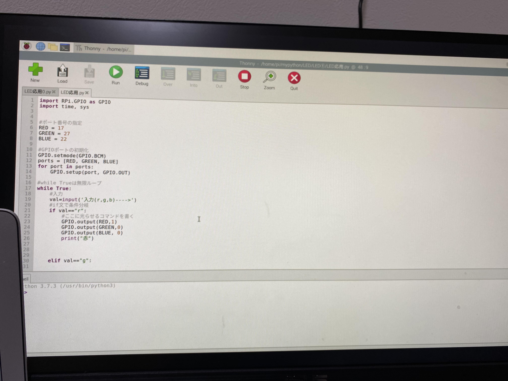
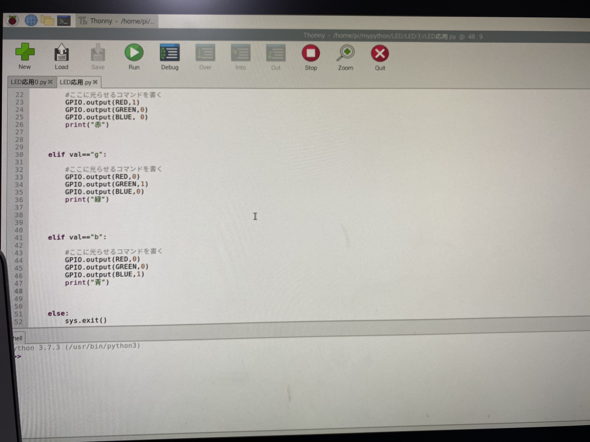

raspberrypi4 条件分岐🐈

下記の画像を参照にプログラムを書き込み、 ボタンを押したら、LEDのライトが変わっていくというプログラムを構成する

✳︎プログラム✳︎
import RPi.GPIO as GPIO
import time,sys
#ポート番号の指定
RED＝17
GREEN=27
BLUE=22
#GPIOポートの初期化
GPIO,set mode(GPIO,BCM)
ports=[RED,GREEN,BLUE]
For port in ports:
GPIO.setup(port,GPIO.OUT)
#while Trueは無限ループ
while True:
#入力
val=input('入力（r,g,b) ---->')
#if文で条件分岐
if val=="r":
# ここに光らせるコマンドを書く
GPIO.output(RED,1)
GPIO.output(GREEN,0)
GPIO.output(BLUE,0)
print("赤")
elif val=="g":
# ここに光らせるコマンドを書く
GPIO.output(RED,0)
GPIO.output(GREEN,1)
GPIO.output(BLUE,0)
print("緑")
elif val=="b":
# ここに光らせるコマンドを書く
GPIO.output(RED,0)
GPIO.output(GREEN,0)
GPIO.output(BLUE,1)
print("青")
else:
sys.exit()


✳︎実行✳︎
実行すると、キーボードのrを押せば「赤」
キーボードのgを押せば「緑」
キーボードのbを押せば「青」となる！